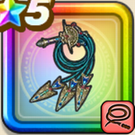

グリンガムの三竜鞭
攻略班 8.5点 / スパークショットドラゴンオーラ雷閃鞭タバササイクロン呼応する想いまものつかいの血筋
くわしい特徴
【レベル別習得スキル】 Lv1【魔法戦士】攻撃力+5 Lv1【レンジャ】すばやさ+5 Lv10スパークショット（消費MP：5）敵1体に威力120%のイオ属性体技ダメージを与えたまに幻でつつみこむ Lv15ドラゴンオーラ（消費MP：最大MPの10%）敵単体にメラ属性のブレス特大ダメージを与え、自身のこうげき力をかなり上げる。さらにメラとギラ耐性を上げる Lv20雷閃鞭（消費MP：43）敵全体に威力390%のデイン属性体技ダメージ(メタル系に+40)を与え、与えたダメージに応じて仲間全員のMPを回復する(最大25回復) Lv30タバササイクロン（消費MP：58）敵全体に敵ごとに有効なメラかバギ属性の威力500%の体技ダメージを与え、たまに両隣の敵に威力150%の連鎖ダメージを与える Lv35ドラゴン系へのダメージ+5% Lv40ドラゴン系へのダメージ+5% Lv45攻撃力+12 Lv50呼応する想い（消費MP：14）戦闘開始時に自身のこうげき力を上げ、まれに追加でランダムな仲間のこうげき力を上げる(効果2ターン) Lv50まものつかいの血筋（消費MP：20）戦闘開始時に敵にドラゴン系が含まれているなら味方全体を優先して行動させる(行動回数3回分) 【限界突破スキル】 1凸スキルの斬撃・体技ダメージ+7% 2凸スキルの斬撃・体技ダメージ+7% 3凸スキルの斬撃・体技ダメージ+7% 4凸スキルの斬撃・体技ダメージ+7%